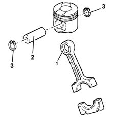
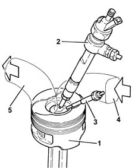

DESCRIPTION OF COMPONENTS
- Path
- Descriptions > 10 ENGINE > 1028 PISTONS AND CONNECTING RODS > 1028H PISTONS AND CONNECTING RODS > DESCRIPTION OF COMPONENTS
- Kind
- system description
- Applies to
- engines: 2.4 JTD 10V; all production periods
- Interactive page
- https://sloeber94.github.io/elrnDB-lThss/en/#/609733
Applies to: engines: 2.4 JTD 10V; all production periods
CONNECTING RODS
Specifications
Type
The connecting rods are in hardened steel with a copper bush (1) press-fitted for connection to piston pin (2).
The floating pins are held in place by two expansion rings (3) that are housed in grooves on the piston hubs.

PISTONS
Specifications
Type
The silicon light alloy pistons with autothermic inserts are subdivided into three size categories
An OMEGA-shaped combustion chamber in the piston crown improves combustion efficiency.
The piston is coupled to the pin by means of two copper alloy bushes.

- 1. Piston
- 2. Injector
- 3. Heater plugs
- 4. Air intake
- 5. Exhaust gas outlet